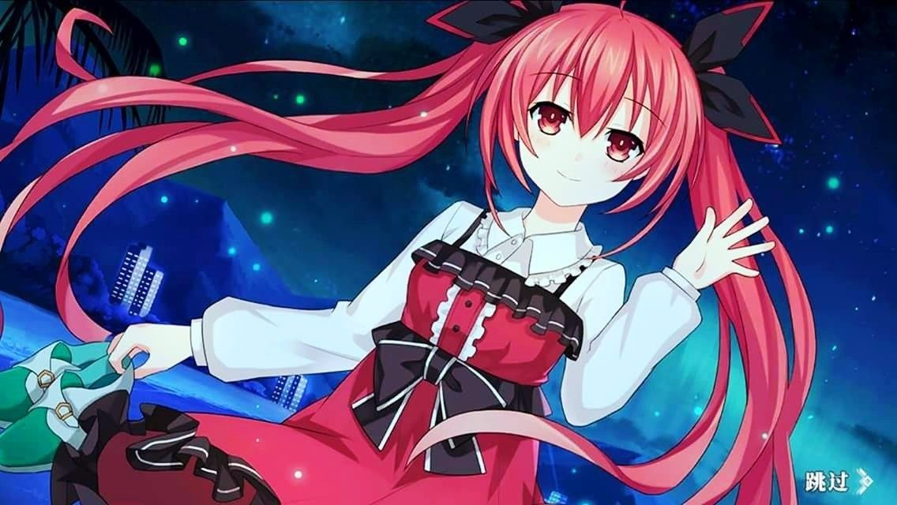

Kotori is one of the main female characters in Date A Live, and she has multiple different identities.
Her personalities are different due to the color of her ribbons. In general, her ribbons are black, acting as a "mature" commander, helping Shido with dating and saving other Spirits. However when her ribbons are white, she is acting as Shido's cute (foster) little sister, demanding for Shido's love and care. And what's more, she is also a Spirit.
For more informations, please visit here
